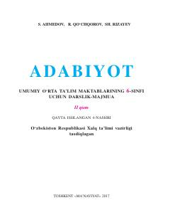

A66-sinf o‘quvchilari uchun mo‘ljallangan adabiyot fanidan darslik-majmua.
Ushbu darslik umumiy o‘rta ta’lim maktablarining 6-sinf o‘quvchilari uchun mo‘ljallangan bo‘lib, o‘zbek va jahon adabiyoti namunalarini o‘z ichiga oladi. Kitobda badiiy asarlarning turlari, janrlari va adiblar ijodi haqida nazariy hamda amaliy ma’lumotlar keltirilgan.